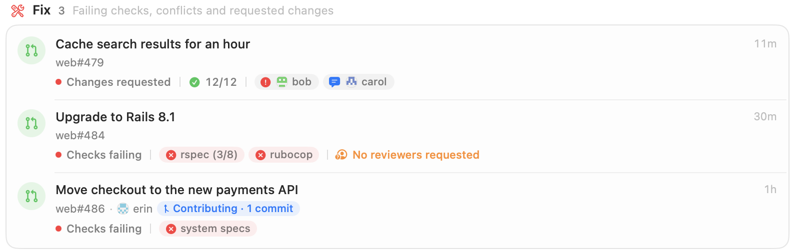
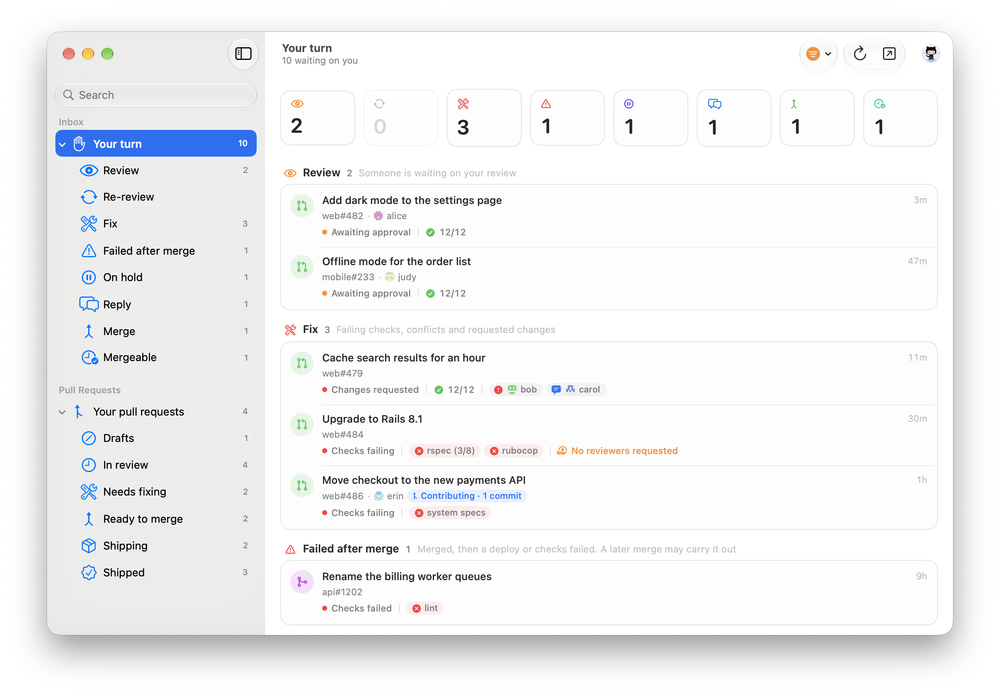
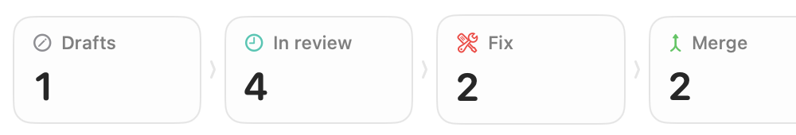
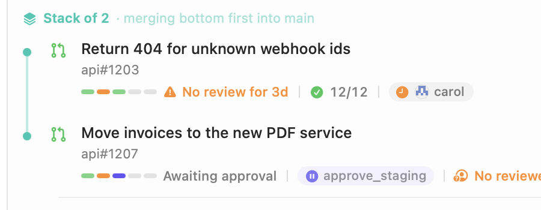
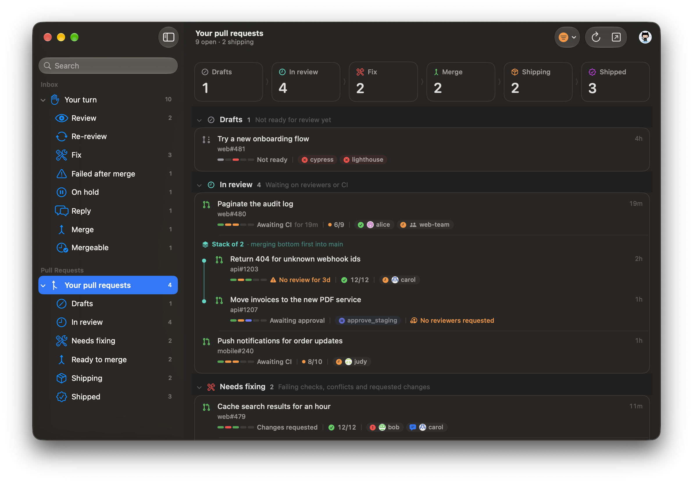

See which check broke.
Each row names the failing checks, requested changes and missing reviewers, so you can see what to fix before opening it.

GitHub notifications and pull requests, sorted by what you need to do.
Free and open source · macOS 14 or later

GitBell groups your GitHub activity into reviews, fixes, replies, held CI jobs and merges, shows why each one needs you, and leaves out the rest. The Dock icon shows how many are waiting.
Each row names the failing checks, requested changes and missing reviewers, so you can see what to fix before opening it.

From draft to deployed, with what each one is waiting on and for how long.

For review requests, failing checks, requested changes, pull requests ready to merge, deploys, and checks that fail after a merge.
Pull requests built on each other's branches are shown together, in merge order. You can also approve held CircleCI jobs from the list.

Each pull request's history, from opening to deploy, with how long each step took.
Example timings.
Written in Swift and SwiftUI and laid out like Mail: a sidebar of pages and groups with counts, and search at the top. It supports light and dark mode, and Liquid Glass on macOS 26.

An optional menu bar icon opens the window or a compact popover.
Choose which organisations to include, whether to show personal repositories, and whose activity counts.
Every action is in the menus, with its shortcut.
Drag GitBell to Applications. It updates itself with Sparkle.
Download for MacGitBell isn't notarised yet, so macOS blocks it the first time. In System Settings → Privacy & Security, click Open Anyway, or run:
xattr -dr com.apple.quarantine /Applications/GitBell.appGitBell uses your GitHub CLI login if you have one. Otherwise paste a classic personal access token with notifications, repo and read:org. It's kept in your Keychain. A CircleCI token is optional, for approving held jobs.
There's no GitBell server. The app talks to GitHub directly from your Mac.
Your GitHub and CircleCI tokens are kept in the macOS Keychain.
Release builds send anonymous usage counts and crash reports, without your token or any names. You can turn this off in Settings → General → Privacy.
MIT licensed. You can build it yourself with Xcode and XcodeGen; builds from source send no data.